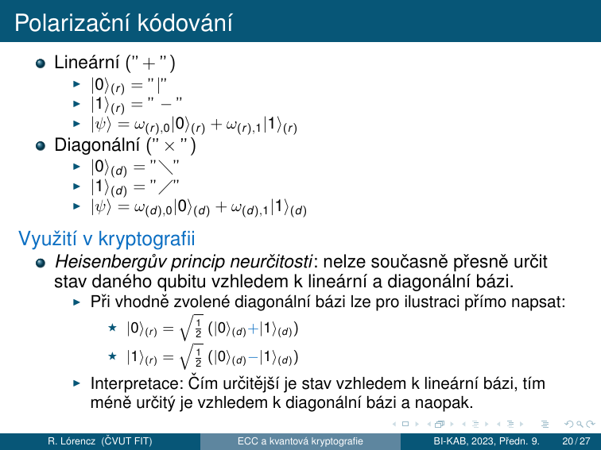
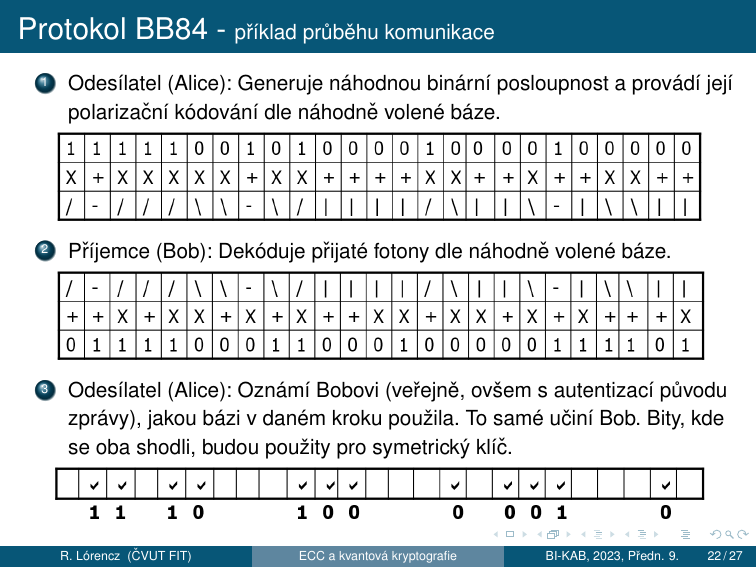
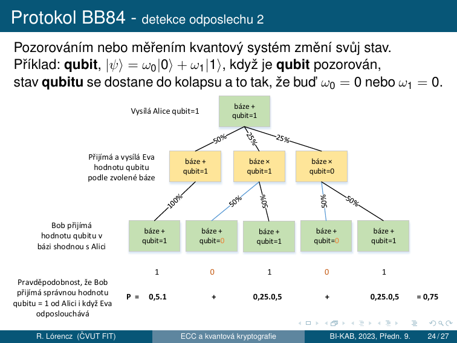
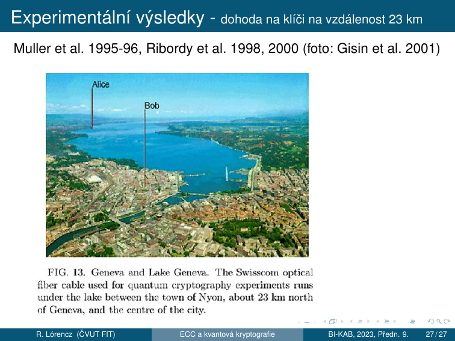

7. Kvantová kryptografie¶
Cíle kapitoly
- Pochopit rozdíl mezi klasickou a kvantovou informací
- Porozumět principu qubitu, superpozice a měření
- Projít celý BB84 protokol krok za krokem
- Znát detekci odposlechu a pravděpodobnost detekce Evy
- Znát post-kvantové hrozby pro klasickou kryptografii
7.1 Klasická vs. kvantová informace¶
Klasická informace¶
- Lze libovolně kopírovat. Zejména je možné vytvořit zcela identickou kopii dané zprávy.
Kvantová informace¶
- Nelze vytvořit identickou kopii neznámého kvantového stavu.
- Vychází z Heisenbergova principu neurčitosti:
- Čtení zprávy zároveň ovlivňuje její obsah.
- Nejznámějšími veličinami tohoto typu jsou poloha a hybnost elementární částice v kvantové fyzice: \(\Delta x \cdot \Delta p \geq \frac{\hbar}{2}\)
Heisenbergův princip neurčitosti
Je to matematická vlastnost dvou kanonicky konjugovaných veličin. Čím přesněji určíme jednu z konjugovaných veličin, tím méně přesně můžeme určit tu druhou, a to bez ohledu na kvalitu přístrojů.
Klíčový rozdíl
Tvrzení z klasické fyziky: Můžeme předpovědět chování systému, pokud známe jeho počáteční stav.
Pro kvantovou fyziku neplatí: Počáteční stav systému nikdy nemůžeme zjistit dostatečně přesně — nelze dostatečně přesně zjistit obě konjugované veličiny najednou.
7.2 Klasická vs. kvantová kryptografie¶
Klasická kryptografie¶
- Musí se vyrovnat s možností neomezeného kopírování nosičů klasické informace.
- Řešení:
- Použití klíčů o extrémních délkách — princip one-time pad
- Spoléhání na výpočetní složitost
Kvantová kryptografie¶
- Zakládá na nemožnosti tvorby identických kopií neznámého kvantového stavu.
- Nejprve se přenese klíč, který se při pozitivní detekci odposlechu zruší.
7.3 Kvantová kryptografie — hlavní rysy¶
Nepodmíněná bezpečnost¶
- V teoretické rovině lze dokázat bezpečnost systému bez ohledu na prostředky útočníka.
- V teoretické rovině lze dosáhnout i absolutní bezpečnosti.
- Předpokládá se, že bezpečnost těchto systémů nebude dotčena ani ve věku kvantových počítačů.
Současný stav¶
- Hlavní pozornost je zatím věnována přenosu zpráv.
- S uchováváním kvantově šifrované informace jsou spojeny jisté technologické potíže.
- Některé druhy schémat nejsou dostatečně propracovány — kvantová schémata digitálního podpisu.
7.4 Qubit — základní jednotka¶
Za fyzikální obraz qubitu považujeme libovolný kvantově mechanicky popsaný objekt, jehož stavy jsou prvky dvourozměrného Hilbertova prostoru:
- Foton (polarizace, fázový posun)
- Elektron (spin)
- Atom (spin)
Formální definice qubitu
kde \(\omega_0, \omega_1 \in \mathbb{C}\), \(|0\rangle, |1\rangle\) jsou bázové vektory \(H_2\).
\(|0\rangle, |1\rangle\) nazýváme vlastní stavy qubitu.
- Měřením qubitu získáme hodnotu odpovídající právě 1 vlastnímu stavu.
- Superpozici nelze „vidět" — koeficienty \(\omega_0, \omega_1\) určují rozdělení výsledků měření.
- Měření superpozice zaniká a qubit přechází do vlastního stavu (kolaps kvantového systému).
- Měřením jednoho qubitu získáme nejvýše 1 bit klasické informace.
7.5 Polarizační kódování¶
Lineární báze ("+")¶
| Stav | Symbol | Polarizace |
|---|---|---|
| $ | 0\rangle_{(r)}$ | \| |
| $ | 1\rangle_{(r)}$ | — |
Diagonální báze ("×")¶
| Stav | Symbol | Polarizace |
|---|---|---|
| $ | 0\rangle_{(d)}$ | \ |
| $ | 1\rangle_{(d)}$ | / |
Využití v kryptografii¶
Heisenbergův princip neurčitosti: nelze současně přesně určit stav daného qubitu vzhledem k lineární a diagonální bázi.
- Při vhodně zvolené diagonální bázi lze pro ilustraci přímo napsat:
Interpretace: Čím určitější je stav vzhledem k lineární bázi, tím méně určitý je vzhledem k diagonální bázi a naopak.
Pokud měříme fotón ve špatné bázi (fotón je v bázi +, měříme bází ×), výsledek je náhodný a původní stav je destruován.

7.6 Protokol BB84 (Benett-Brassard 1984)¶
Motivace¶
Absolutně bezpečné kryptosystémy
- Existují perfektní kryptosystémy, např. One-Time Pad (OTP — Vernamova šifra).
- Zůstává ale problém bezpečné distribuce klíčů.
- Řešení: Distribuce klíče (zřízení společného klíče) na základě kvantového jevu zaručujícího perfektní utajení.
- Protokol BB84 slouží k dohodě na symetrickém klíči využívající kvantových jevů, který je následně použit pro systém one-time pad.
- Založen na využití Heisenbergova principu neurčitosti ve spojení s polarizačním kódováním.
- S mírnými obměnami je BB84 používán a rozvíjen dodnes.
Průběh protokolu¶
sequenceDiagram
participant A as Alice
participant Q as Kvantový kanál
participant E as Eva (útočník?)
participant B as Bob
participant C as Klasický aut. kanál
A->>Q: Fotony s náhodnou polarizací (báze +/×, bit 0/1)
Q->>E: Eva případně odposlechne a přepošle
E->>B: Přeposlaný fotón (Eva změní stav!)
A->>C: Oznámí použité báze (NE hodnoty bitů!)
B->>C: Oznámí použité báze
note over A,B: Ponechají bity kde se báze shodují (~50% bitů = sieved key)
A->>C: Odhalí náhodný vzorek bitů klíče
B->>C: Porovná stejné pozice
note over A,B: QBER > práh (~11%) → Eva detekována → klíč zahodit
note over A,B: Jinak: Error Correction + Privacy Amplification → OTP klíčKrok za krokem — příklad z přednášky¶

① Odesílatel (Alice): Generuje náhodnou binární posloupnost a provádí její polarizační kódování dle náhodně volené báze.
| Alicin bit | 1 | 1 | 1 | 1 | 1 | 0 | 0 | 1 | 0 | 1 | 0 | 0 | 0 | 0 | 1 | 0 | 0 | 0 | 0 | 0 |
|---|---|---|---|---|---|---|---|---|---|---|---|---|---|---|---|---|---|---|---|---|
| Báze | X | + | X | X | X | + | + | X | X | + | + | + | X | + | X | + | + | X | X | + |
| Polarizace | / | — | / | / | / | | | | | / | \ | — | | | | | \ | | | / | | | | | \ | \ | | |
② Příjemce (Bob): Dekóduje přijaté fotony dle náhodně volené báze.
| Bobova báze | / | — | / | / | / | | | | | / | \ | — | | | | | \ | | | / | | | | | \ | \ | | |
|---|---|---|---|---|---|---|---|---|---|---|---|---|---|---|---|---|---|---|---|---|
| Přijatý bit | 0 | 1 | 1 | 1 | 1 | 0 | 0 | 1 | 1 | 0 | 0 | 0 | 1 | 1 | 1 | 1 | 0 | 1 |
③ Odesílatel (Alice): Oznámí Bobovi (veřejně, ovšem s autentizací původu zprávy), jakou bázi v daném kroku použila. To samé učiní Bob. Bity, kde se oba shodli, budou použity pro symetrický klíč.
| Shoda báze | ✓ | ✓ | ✓ | ✓ | ✓ | ✓ | ✓ | ✓ | |||||||
|---|---|---|---|---|---|---|---|---|---|---|---|---|---|---|---|
| Výsledný klíč | 1 | 1 | 0 | 1 | 0 | 0 | 0 | 1 | 0 |
Proč Eva nemůže odposlechnout?¶
Princip detekce odposlechu
Eva musí změřit každý fotón, aby ho přečetla. Pokud zvolí špatnou bázi (50% šance), stav fotónu se změní. Přepošle Bobovi fotón ve špatném stavu → Bob naměří špatnou hodnotu, i když použil správnou bázi.
- Pravděpodobnost chyby na jeden odposlechnutý bit: 25%
- Pravděpodobnost detekce při \(n\) obětovaných bitech: \(1 - \left(\frac{3}{4}\right)^n \to 1\)
Číselný příklad
Pro \(n = 40\) obětovaných bitů: pravděpodobnost nedetekce \(= (3/4)^{40} < 10^{-5}\).

Pozorováním nebo měřením kvantový systém změní svůj stav. Příklad: qubit \(|\psi\rangle = \omega_0|0\rangle + \omega_1|1\rangle\), když je qubit pozorován, stav qubitu se dostane do kolapsu a to tak, že buď \(\omega_0 = 0\) nebo \(\omega_1 = 0\).
Privacy Amplification¶
V současných systémech se ještě provádí zesílení soukromí (privacy amplification): - Cílem je dále minimalizovat Evinu informaci o dohodnutém klíči, která (snad) byla získána nedetekovaným odposlechem.
7.7 QBER — Quantum Bit Error Rate¶
| Situace | QBER |
|---|---|
| Bez odposlechu (ideální) | \(\approx 0\) |
| Fyzický šum kanálu | malé nenulové |
| 100% odposlech Evou | \(\approx 25\%\) |
| Bezpečnostní práh | typicky \(\leq 11\%\) |
7.8 Implementační aspekty BB84¶
Dva druhy komunikace¶
Kvantová komunikace: - Nutný kvalitní nerušený komunikační kanál mezi Alicí a Bobem - Optický kabel bez běžných infrastrukturních prvků - Nutno znát model chyb - Synchronizace přenosu
Klasická komunikace: - Lze použít běžnou síťovou infrastrukturu - Není třeba zajišťovat důvěrnost přenášených zpráv - Musí být zajištěna autentizace původu kontrolních zpráv mezi Alicí a Bobem - Použití rádiového kanálu nemusí být dostatečné
Aplikační aspekty¶
BB84 je schopen do jisté míry nahradit asymetrické systémy ve stávajících aplikacích: - Zamýšleno zejména s ohledem na teoretické hrozby přicházející z oblasti kvantových počítačů.
V zásadě dva typy uživatelů:
| Typ uživatele | Co získají | Co ztratí |
|---|---|---|
| Současní uživatelé asymetrických schémat | Vyšší teoretickou bezpečnost | Poněkud ztrácejí pohodlí; ne všechny komponenty lze zatím nahradit (podpis) |
| Vojenští a zpravodajští uživatelé | Větší pohodlí při zachování přibližně stejné úrovně bezpečnosti | — |
Experimentální výsledky¶

Muller et al. 1995–96, Ribordy et al. 1998, 2000 (foto: Gisin et al. 2001)
Dohoda na klíči na vzdálenost 23 km pomocí optického kabelu Swisscom pod dnem Ženevského jezera (entre Nyon a Ženevou).
7.9 Post-kvantová kryptografie¶
Kvantové hrozby pro klasické algoritmy¶
| Algoritmus | Kvantový útok | Efektivní bezpečnost |
|---|---|---|
| AES-128 | Groverův alg. | 64 bitů (polovina) |
| AES-256 | Groverův alg. | 128 bitů ✅ |
| RSA-2048 | Shorův alg. | 0 bitů ❌ |
| DH-3072 | Shorův alg. | 0 bitů ❌ |
| ECC-256 | Shorův alg. | 0 bitů ❌ |
| SHA-256 | Groverův alg. | 128 bitů ✅ |
Shorův algoritmus (1994)
Řeší faktorizaci a diskrétní logaritmus v polynomiálním čase na kvantovém počítači.
- RSA, DH, ElGamal, DSA, ECDH, ECDSA → zranitelné
- Dostatečně velký kvantový počítač zatím neexistuje, ale příprava musí začít dnes.
NIST Post-Quantum Standardy (2024)¶
NIST v srpnu 2024 vydal první post-kvantové standardy:
| Standard | Původ | Typ | Použití |
|---|---|---|---|
| ML-KEM (FIPS 203) | CRYSTALS-Kyber | Lattice | Key encapsulation |
| ML-DSA (FIPS 204) | CRYSTALS-Dilithium | Lattice | Digitální podpis |
| SLH-DSA (FIPS 205) | SPHINCS+ | Hash-based | Digitální podpis |
Shrnutí kapitoly¶
Rychlý přehled
- Klasická vs. kvantová info: kvantovou informaci nelze zkopírovat bez ovlivnění
- Qubit: \(|\psi\rangle = \omega_0|0\rangle + \omega_1|1\rangle\); fyzické realizace: foton, elektron, atom
- Heisenbergův princip: nelze přesně měřit polohu i hybnost → nelze odposlechnout bez detekce
- Polarizační kódování: dvě báze
+a×, nekompatibilní měření = náhodný výsledek - BB84: Alice posílá fotony, Bob měří, veřejně porovnají báze, QBER detekuje Evu
- Detekce: pravděpodobnost detekce \(= 1-(3/4)^n\) pro \(n\) obětovaných bitů
- Privacy amplification: minimalizuje Evinu informaci z nedetekovaného odposlechu
- Kvantová kryptografie: nepodmíněná bezpečnost, odolná vůči kvantovým počítačům
- Post-kvantová kryptografie: ML-KEM, ML-DSA, SLH-DSA (NIST 2024)
Klíčové otázky ke zkoušce
- Co je qubit a jak se liší od klasického bitu? Jaké jsou fyzické realizace?
- Proč nelze kvantovou informaci zkopírovat? (Heisenbergův princip)
- Vysvětlete polarizační kódování — dvě báze a jejich vztah.
- Projděte BB84 na příkladu — co Alice posílá, co Bob dělá, jak se filtruje klíč.
- Jak Eve detekujeme? Proč Eva nemůže odposlechnout bez chyby?
- Jaká je pravděpodobnost detekce Evy při \(n\) obětovaných bitech? Spočítejte pro \(n = 40\).
- Co je QBER a jaký je bezpečnostní práh?
- Jaké jsou implementační požadavky na kvantový vs. klasický kanál v BB84?
- Jaké klasické kryptografické algoritmy ohrožuje Shorův algoritmus?
- Co je post-kvantová kryptografie? Vyjmenujte NIST standardy 2024.